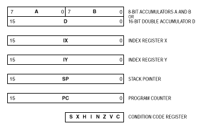

| Previous Section | Next Section | Index | Questions | Search the Text |
The Freescale 68HC12 CPU is somewhat more complex than the example CPU described in the previous section. However the basics of how the CPU functions are the same.

For writing programs, the connections between registers are not important, since these details are handled by the CPU's control unit. What is important to the programmer are registers that are directly accessible via CPU instructions. These registers represent the Programmer's Model of the CPU. The 68HC12 has five 16 bit registers and three 8 bit register as follows:
The 68HC12 provides two alternative memory interfaces that trade off speed for simplicity. Normal Expanded Narrow mode has 16 address lines and 8 data lines, like the example. The 68HC12 has internal 16 bit data paths, so it automatically converts read and write requests for 16 bit words into two sequential byte requests.
In Normal Expanded Wide mode, there are 16 address and 16 data lines. Memory is organized to be 16 bits wide, such that an even address byte and the next higher odd address byte will be read or written at the same time. Requests to access a single byte are implemented by an additional control line, LSTRB. If the processor wants to access a word starting at an odd byte, the memory interface performs two consecutive byte references. Normal Expanded Wide mode can access memory with twice the throughput (data rate) if the data is 16 bits and aligned on an even address.
The processor has an instruction queue that reads instructions two bytes at a time, always at even addresses. It is the programmer's responsibility to align word data on even locations for optimal performance.
The memory interface will be discussed thoroughly in its own section.
The 68HC12 overlaps the execution phase with the fetch of the next instruction for maximum performance. Details of the operation of the instruction queue and execution overlap can be found in theS12CPUV2 Reference Manual in chapter 4 as well as in the descriptions of the individual instructions in the instruction glossary, Appendix A.
You can run the example program on the 68HCS12 simulator. This tool simulates the operation of a 68HCS12 and allows viewing registers and memory locations.
Start the simulator by selecting this link. When the simulator starts, the PC register is initialized to $2000, the start of the program. Note that all the display fields show values in hexadecimal by default. The Next Instruction window shows the next instruction to execute is LDAA $1000. The bottom of the display shows the contents of memory, starting at location $1000, which is the memory containing the data. The following processor state was copied to this textbook from the simulation using the simulator's "Snapshot" feature:
A=00 B=00 (D=0000) X=0000 Y=0000 PC=2000 SP=0000 FLAGS=SX-I---- 2000 LDAA $1000 (=$25) Addr 0 1 2 3 4 5 6 7 8 9 A B C D E F '0123456789ABCDEF' 1000 25 37 00 00 00 00 00 00 00 00 00 00 00 00 00 00 |%7 | |
Press the Step button once. The LDAA instruction will execute, and accumulator A will contain the data value that is location $1000. The value of the program counter has advanced to $2003, and the next instruction is now the ADDA instruction.
A=25 B=00 (D=2500) X=0000 Y=0000 PC=2003 SP=0000 FLAGS=SX-I---- 2003 ADDA $1001 (=$37) Addr 0 1 2 3 4 5 6 7 8 9 A B C D E F '0123456789ABCDEF' 1000 25 37 00 00 00 00 00 00 00 00 00 00 00 00 00 00 |%7 | |
Press the Step button three more times, and observe the contents of the registers after each instruction step. After the execution of ADDA:
A=5c B=00 (D=5c00) X=0000 Y=0000 PC=2006 SP=0000 FLAGS=SX-I---- 2006 DECA Addr 0 1 2 3 4 5 6 7 8 9 A B C D E F '0123456789ABCDEF' 1000 25 37 00 00 00 00 00 00 00 00 00 00 00 00 00 00 |%7 | |
After the execution of DECA:
A=5b B=00 (D=5b00) X=0000 Y=0000 PC=2007 SP=0000 FLAGS=SX-I---- 2007 STAA $1002 Addr 0 1 2 3 4 5 6 7 8 9 A B C D E F '0123456789ABCDEF' 1000 25 37 00 00 00 00 00 00 00 00 00 00 00 00 00 00 |%7 | |
The final instruction, the STAA instruction, will have stored the final value of accumulator A into memory location $1002.
A=5b B=00 (D=5b00) X=0000 Y=0000 PC=200a SP=0000 FLAGS=SX-I---- 200a BGND Addr 0 1 2 3 4 5 6 7 8 9 A B C D E F '0123456789ABCDEF' 1000 25 37 5b 00 00 00 00 00 00 00 00 00 00 00 00 00 |%7[ | |
The next instruction will be "BGND", which is opcode 0. Since the memory has been initialized to zero before the program is loaded, any unused locations will appear to be BGND instructions. The BGND instruction indicates the end of the program. You can close the simulator window now. However if you wish to repeat the execution, select Reset from the File menu. Note that this resets the CPU, not the memory. To change the memory locations, you will need to use the Edit Address and Value fields and the Store button.
Reference: S12CPUV2 Reference Manual
Continue with Develoment Tools
Return to the Index.